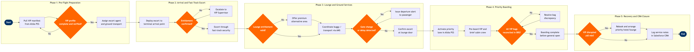

| Step | L4 Step Name | KPI / Target | Pain Point / Risk | Gate |
|---|---|---|---|---|
| 1.1 | Pull premium passenger manifest from Altéa PSS | VIP list generated ≥3h before STD for 100% of flagged flights | Altéa SSR codes not consistently populated by booking agents; last-minute upgrades bypass VIP workflow trigger, causing missed service setup | |
| 1.2 | Verify VIP profile, entitlements and SSRs in CRM | 100% of flagged passengers have CRM profiles verified ≥2h before STD | CRM–PSS integration is batch-updated every 30 min; loyalty tier upgrades post-booking are not reflected in CRM until next sync cycle, causing entitlement disputes at lounge | ⚠ |
| 1.3 | Assign dedicated escort agent and ground transport | Dedicated escort assigned ≥2h before STD for 95% of VIP departures | High-volume departure banks create escort staff shortages; SITA AMS staff-allocation module is not integrated with VIP workflow, requiring manual cross-referencing | |
| 2.1 | Deploy escort agent to kerb or designated arrival point | Escort on-station ≥15 min before passenger arrival for 95% of VIP movements | No real-time kerb vehicle arrival feed from ground transport into Altéa mobile app; agents rely on manual WhatsApp coordination, introducing timing errors | |
| 2.2 | Confirm passenger identity and validate service entitlement | Identity verification completed within 2 min of passenger contact; 100% compliance rate | Offline CRM access unreliable in terminals with poor Wi-Fi coverage; agents revert to static printed lists containing stale tier and entitlement data | ⚠ |
| 2.3 | Escort passenger through fast-track security and immigration | Fast-track clearance time ≤15 min for 90% of VIP passengers | Fast-track lane access controlled by third-party airport authority; VIP agents have no influence over TSA/CBP staffing levels; clearance times spike during IRROP events with no advance warning to escort team | |
| 3.1 | Validate lounge entitlement and execute lounge access | Lounge access processing time ≤3 min for 95% of eligible passengers | LoungeKey API is batch-synced with PSS; real-time upgrades at check-in are not reflected in lounge access rights until next sync, generating incorrect denials and reputational risk | ⚠ |
| 3.2 | Coordinate ground transport, buggy or mobility service | Transport dispatched ≥25 min before STD for 95% of requested VIP movements | AMS ground transport module is not linked to lounge host workstations; lounge staff must radio ramp operations manually, introducing dispatch delays of 5–12 min during peak periods | |
| 3.3 | Monitor flight status and trigger lounge departure alert | Departure alert issued ≥30 min before STD for 98% of VIP departures; gate change communicated within 5 min of AMS notification | Gate change notifications from AMS to lounge management system carry up to 8-min latency; during high-disruption periods VIP passengers have missed boarding calls due to undelivered gate change alerts | ⚠ |
| 4.1 | Set up priority boarding lane and verify gate readiness | Priority lane ready ≥20 min before boarding call for 100% of VIP-flagged flights | Gate agent allocation is driven by generic staffing schedule; premium lane setup requires a manual Altéa query for VIP passenger count — awareness is not pushed to gate agents automatically | |
| 4.2 | Pre-board VIP passenger and brief cabin crew on preferences | VIP pre-board completed ≥10 min before general boarding opens for 95% of applicable flights | No automated CRM-to-EFB passenger profile push; escort agent must verbally relay preferences or hand-carry printed notes, creating transcription errors and missed dietary or seating requirements | ⚠ |
| 4.3 | Confirm VIP baggage priority-tagged and loaded in hold | VIP baggage reconciliation complete ≥10 min before aircraft door close for 100% of bags | SITA BRS priority flag requires a manual scan override by ramp agent; automated priority sequencing is not enforced by baggage handling systems at most outstations, defaulting to FIFO load order | ⚠ |
| 4.4 | Confirm VIP boarding complete before general boarding opens | VIP boarding window closed ≥5 min before general boarding for 95% of flights | Tight turnaround schedules (<35 min ground time) compress the pre-board window; gate agents under pressure to open general boarding early, bypassing the VIP exclusivity window | |
| 5.1 | Detect VIP disruption and escalate for priority recovery | VIP disruption detected and escalated within 10 min of AMS notification for 100% of affected flights | Altéa IRROP rebooking tool does not auto-surface VIP tier during mass disruption; disrupted VIP passengers are queued alongside general passengers with no proactive priority identification | ⚠ |
| 5.2 | Rebook VIP and arrange priority hotel or lounge extension | VIP rebooking offered within 20 min of disruption notification for 95% of affected passengers | Hotel inventory access from Altéa IRROP module is limited to contracted properties; premium passengers expecting 5-star accommodation must be manually booked outside PSS, adding 15–30 min to recovery time | |
| 5.3 | Log service delivery notes and quality score in CRM | CRM updated for 100% of VIP interactions within 2h of flight departure | Post-departure CRM logging is manually triggered with no workflow enforcement; during high-volume operations coordinators defer or skip logging, creating gaps in VIP relationship history that affect retention and future service quality |